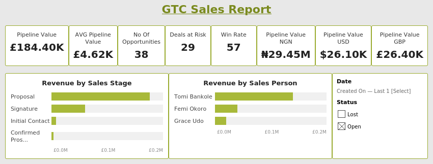
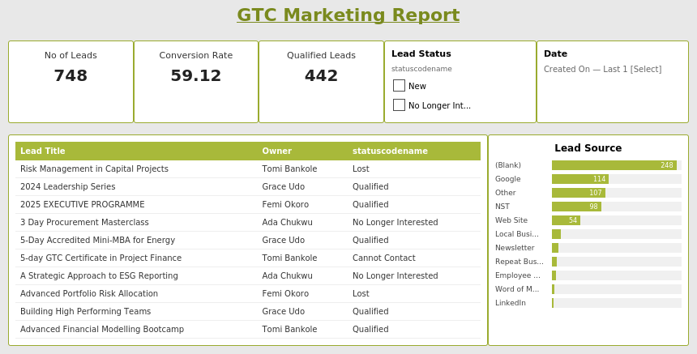
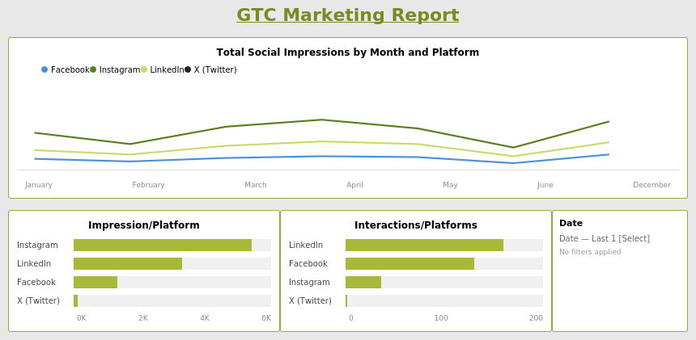
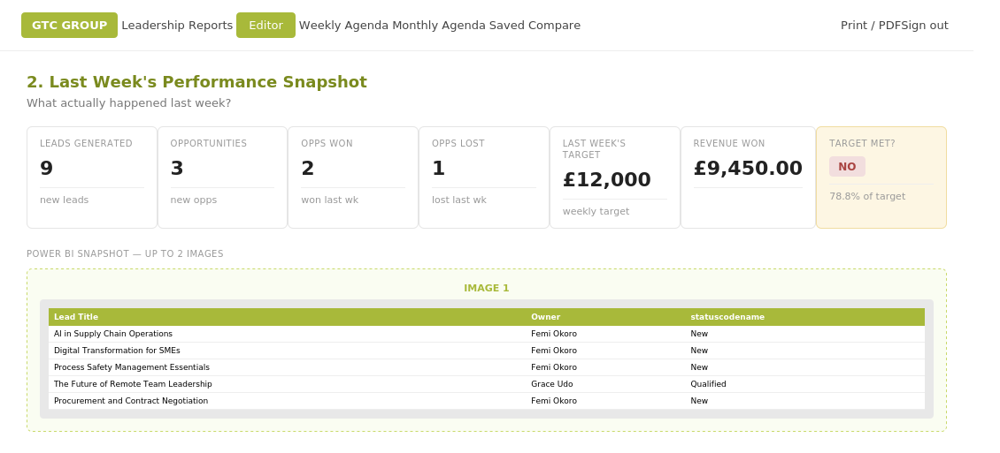
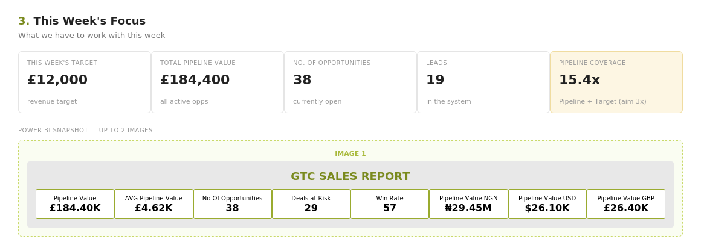
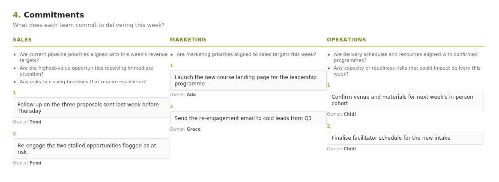

Project Case Study · Sales & Marketing Reporting
A Power BI dashboard connecting 5 data sources, paired with a purpose-built meeting workflow tool — designed so leadership walks into every weekly and monthly meeting with real numbers, not guesswork.
Scroll01 — The Brief
GTC's sales and marketing data lived across five disconnected platforms — Dynamics 365 for pipeline and leads, Google Analytics 4 and Metricool for digital performance, Mailchimp for email engagement, and Nigeria Seminars and Training (NST) for third-party course listings. Before this project, answering a simple question like "what's our pipeline coverage this week?" meant manually pulling numbers from several systems.
Leadership needed a single, reliable view they could walk into weekly and monthly meetings with — one that showed pipeline health, lead generation, marketing performance and risk areas without anyone needing to dig through raw CRM records first.
I designed and built a Power BI dashboard connecting all five sources, with custom DAX measures for things like pipeline coverage, deals at risk, and multi-currency revenue tracking — since GTC's courses are quoted and paid for in GBP, USD and NGN depending on the client.
I then went a step further: I designed a structured weekly and monthly meeting workflow — Performance Snapshot, This Week's Focus, Team Commitments, and Frictions/Blockers — and partnered with Lovable to build it as a web tool, so the dashboard's numbers feed directly into how the meeting is actually run.
02 — Data Sources
Dynamics 365
Pipeline, opportunities, leads, sales activity
Google Analytics 4
Website traffic & engagement
Metricool
Social media performance across platforms
Mailchimp
Email campaign engagement
NST
Third-party course listing leads
Marketing data without a native API connection was consolidated manually into a structured Excel tracker on OneDrive, then connected into Power BI via Power Query — keeping a single source of truth even where automated integration wasn't available.
03 — The Dashboard
What was built
The Sales Report page tracks pipeline value, average pipeline value, open opportunity count, deals at risk, win rate and pipeline value broken out across GBP, USD and NGN — since GTC's courses are quoted and invoiced in whichever currency the client is based in. Revenue is also visualised by sales stage and by sales person, with date and status slicers for filtering live during meetings.
The Marketing Report pages track lead volume, conversion rate, and qualified lead count, with a searchable leads table and a lead source breakdown showing exactly which channel — Google, NST, LinkedIn, website, referral — is generating the most qualified interest. A second marketing page tracks social impressions and interactions by platform and month across Facebook, Instagram, LinkedIn and X.



04 — Why It Matters
Insight 01
Insight 02
Insight 03
05 — The Meeting System
A dashboard on its own doesn't run a meeting. So I designed a structured weekly and monthly review workflow — the concept and structure were mine, built as a working web app in partnership with Lovable — that walks the leadership team through exactly the same four stages every single week, with live Power BI snapshots embedded directly into the page.
What actually happened last week — leads generated, opportunities won/lost, revenue against target, with the live dashboard screenshot pasted in for context.
5 minsWhat we have to work with this week — current pipeline value, open opportunity count, and pipeline coverage against target, again grounded in a live dashboard snapshot.
5 minsSales, Marketing and Operations each commit to specific actions for the week ahead, with a named owner against every commitment — so accountability is visible, not implied.
10 minsIssues actively blocking revenue or execution are logged live — who it affects and what needs to happen — so nothing gets raised once and forgotten.
10 mins


Spotlight — The Access Gap That Proved the Tool's Value
When I went on annual leave, that week's meeting went ahead without the dashboard — at the time, GTC didn't have Power BI Service, so the dashboard lived locally on my machine rather than somewhere the team could access independently. Without it, the team fell back on manually reviewing records in Dynamics 365 during the meeting itself, which meant losing the structured, at-a-glance view the dashboard normally provided.
It surfaced a real gap: a reporting tool is only as valuable as its accessibility. My manager's response was clear — make sure reporting materials are always shared and available on the cloud, not dependent on one person being present.
06 — What Changed
Reporting access is no longer single-person dependent
Following the access gap during my leave, all reporting tools are now shared and cloud-accessible by default, so leadership reviews can happen whether or not I'm in the room.
A repeatable weekly and monthly rhythm
The same four-stage structure — Snapshot, Focus, Commitments, Frictions — now runs every week and every month, giving leadership a consistent format rather than a fresh agenda each time.
Named accountability replaced vague ownership
Every commitment in the meeting now has a named owner attached to it directly in the tool, making follow-up at the next meeting straightforward rather than a memory exercise.
Marketing channel spend is now evidence-led
With lead source visibility built into the dashboard, conversations about where to invest marketing budget now start from real channel performance data rather than instinct.